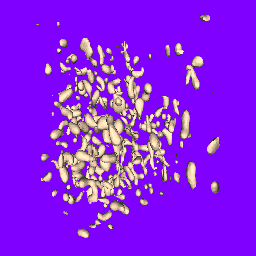

ExtractLevelTetra.h
Each voxel is decomposed into five tetrahedra and linear interpolation is assumed on each tetrahedron. The extraction was applied using level value 64 in the superoxide dismutase molecule image (molecule.im is in the zipped data file available from this web site). The vertices and triangles are written to a text file. I converted that data into a Wild Magic scene graph (.mgc file) and displayed it with a scene viewer. The left image is a view from outside the entire voxel data set. The right image is a view where the camera is moved closer to the data set.
|  |  |
Back face culling is disabled to make sure that non-closed surfaces are viewable from any orientation. The polygonal models have a single material and the scene is illuminated with two directional lights. Notice that the large component in the lower right of the right image is an open surface. This component has its boundary curve on a plane of the voxel data boundary (effectively a truncated portion of a closed surface).